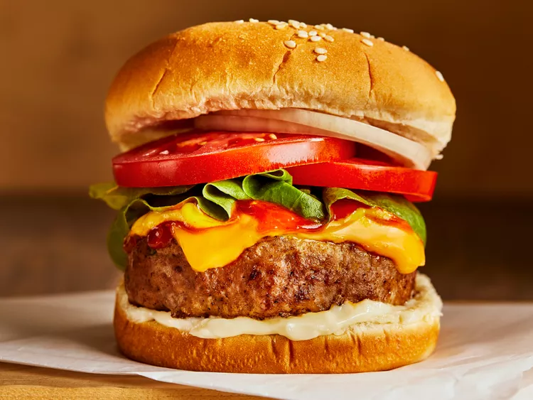

BURGER

D E S C R I P T I O N
Wagyu beef is super juicy and flavourful! And if you are a love of all things meat, you definitely must try Candied Bacon Jerky, sweet and spicy. You might even top your wagyu burger with this bacon!
You can cook wagyu beef burgers, just as easily as regular hamburgers and you will have a delicious gourmet meal to enjoy! Speaking of gourmet, you probably need to enjoy your wagyu burgers with a Cherry Manhattan with homemade Bourbon Cherries. Just Sayin'!
I N G R E D I E N T S
- American Wagyu Burger
- Australian Wagyu Burger
- Japanese A5 Wagyu Burger
- Lettuce
- Tomato
- Onion
- Brie Cheese
- Bacon
S T E P S
- Divide Burger in 2 to 4 burger patties
- Heat skillet or grill to medium-high heat
- Place each wagyu burger into the skillet. Season with a sprinkle of salt
- Do not move or flip burgers until the bottom forms a caramelized brown crust
- Cook to desired temperature on the first side
- Flip each burger and cooked to desired temperature on second side
- Remove burgers from skillet and grill and serve with toppings of choice
Return to top
Return to main page